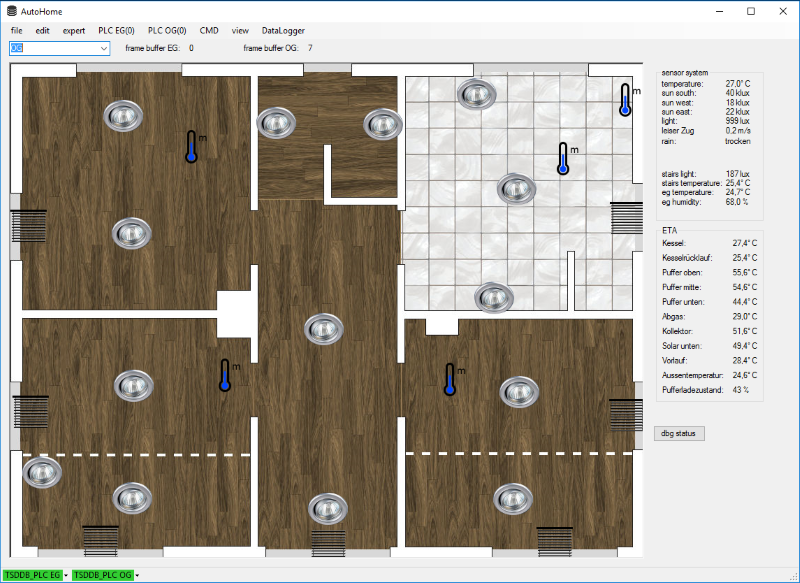

Control system¶
Node red¶
As control system and for the connection of other devices I currently use node-RED.
Node-RED is a programming tool for wiring together hardware devices, APIs and online services
It has already implemented interfaces (which are called 'nodes') to a lot of devices I use.
Requirements regarding plugins¶
- node-red-dashboard
- node-red-contrib-fritz
- node-red-contrib-s7
- node-red-node-mysql
- node-red-contrib-os
- node-red-contrib-mqtt-broker
- node-red-node-email
- (outdated) node-red-contrib-netatmo
- node-red-contrib-netatmo-dashboard
- node-red-contrib-viera
Dashboards¶
It is easy to make quick dash boards to monitor the sensor and health state of the devices.

Or to configure debug / control clients for different devices
Grafana¶
Using an open source solution is much easier than implementing a monitor dashboard yourself.
Grafana is the open source analytics and monitoring solution for every database
I had good experiences with grafana. Out of the box even larger time ranges are displayed performant.
I can recommend this installation pages

mqtt mosquitto¶
Eclipse Mosquitto is an open source message broker that implements the MQTT protocol
Raspberry setup¶
Most of the control components are running as docker image on a raspberry.
Here are a few steps to set up:
-
enable ssh server
-
copy the puplic key to the raspberry for easier access
cat ~/.ssh/id_rsa.pub | ssh pi_name@192.168.xxx.xxx -p 22 'mkdir -p ~/.ssh && cat >> ~/.ssh/authorized_keys'- get docker
`sudo apt-get update && sudo apt-get upgrade -y`
`curl -sSL https://get.docker.com | sh`
`sudo usermod -aG docker $USER`- setup container mqtt mosquitto
docker run -itd -p 1883:1883 -p 9001:9001 --name mosquitto_ah eclipse-mosquitto- setup container node red
Mind that as long as we run the mosquitto and node-red container at the same host the --link mosquitto_ah:broker is necessary.
If changing the deployment to different machines update the node-red-mqtt-server from broker to the new ip address
sudo chown -R 1000:1000 /home/pi/.node-red
docker run -it -p 1880:1880 -p 7724:7724/udp -p 7725:7725/udp -v /home/pi/.node-red:/data --restart=always --name nodered_ah --link mosquitto_ah:broker nodered/node-red- setup container grafana
docker volume create grafana-storage
docker run -d -p 3000:3000 -v grafana-storage:/var/lib/grafana --name=grafana_ah grafana/grafana- setup pi hole
The network ad blocking / monitoring software pi-hole.net
is not really connected to the home automation system but it is always a good idear to have control over your network.
dotNet tool¶
Here are some historical pics of the outdated dot net tool.

